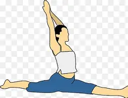

1. Reduces the Risk of Injury
*When a muscle or joint is inflexible, it is stiff and its range of motion is limited.
Imagine a cable that is very tense; if you stretch it a little further, it breaks. A flexible muscle is like an elastic band: it can stretch and return to its shape without tearing easily.
-Prevents Tears: Prepares tissues for the stresses of intense exercise.
-Improves Shock Absorption: Allows joints to better absorb impacts (like running or jumping).
The importance of stretching lies in several key aspects: Injury Prevention: Stretching helps prepare muscles for physical activity, reducing the risk of injury.
-Improved Flexibility and Mobility: Regular stretching increases flexibility and mobility, which is essential for good physical performance.
-Improved Posture: Helps maintain good body posture, which can prevent aches and strains.
Muscle Recovery: Stretching after exercise can accelerate muscle recovery and relieve tension.
-General Health Benefits: Contributes to general health and well-being, improving performance in physical activities.
-These benefits make stretching a fundamental part of any exercise routine.
Any high-performance athlete must go through a stretching process of between 40-60 minutes before participating.
Experts agree that flexibility is essential for physical health and performance.
Stretching is always necessary and can be beneficial for improving range of motion and reducing the risk of injury.
However, it is important not to over-stretch or do it incorrectly, as this can be harmful.
The optimal amount of flexibility varies depending on the person and the type of activity they perform.